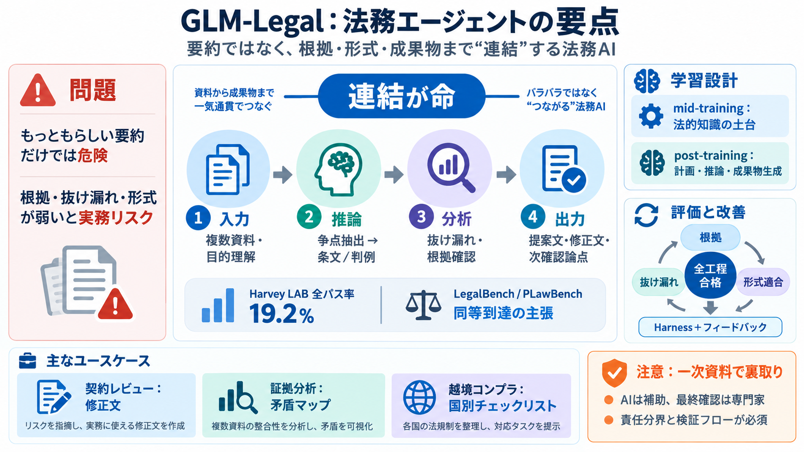

Harvey's Legal Agent Benchmark Leaderboard & Scores — September 2026 | BenchLM.ai
Harvey's Legal Agent Benchmark on Vals AIVals methodologyVals home The published Harvey's Legal Agent Benchmark snapsho…

Harvey's Legal Agent Benchmark on Vals AIVals methodologyVals home The published Harvey's Legal Agent Benchmark snapsho…
In 2025, we celebrated major customer wins, introduced product breakthroughs, and expanded our global presence. Most imp…
LAB contains more than 1,250 tasks across 24 legal practice areas. Each datapoint includes source documents, task instru…
## Repository files navigation Harvey LAB Harvey LAB Legal Agent Benchmark (LAB): An open-source benchmark for evalua…
byNiko Grupen, Julio Pereyra, Gabe Pereyra, Rhythm Garg, Jacob Phillips, and Raymond Feng•Jun 22, 2026 Building on our …